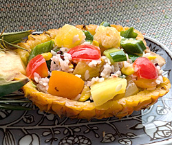

パイナップルのライスサラダ
- 調理時間：20分
- （一人当たり）
- カロリー：417kcal
- たんぱく質：4.4g
- 脂質：20.8g
- 炭水化物：51.5g
- 塩分：1.2g


＜材料（2人分）＞
- ごはん（雑穀米）
- 200 g
- カットパイン
- 100 g
- (写真では丸ごと1個のパインを器にしています)
- キュウリ
- 1/2 本
- ミニトマト
- 4 個
- オクラ
- 2 本
- ホールコーン
- 50 g
A
- ・サラダ油
(オリーブ油でもよい) - 40 ml
- ・穀物酢
- 20 ml
- ・塩
- 小さじ1/2
- ・コショウ
- 少々


- カットパインは一口大に切る。
キュウリは1㎝の角切りにする。
ミニトマトは4等分に切る。
オクラは塩で板ずりしてから小口切りにする。 - ボウルにAの材料を合わせ、フレンチドレッシングをつくる
- 別のボウルに冷ましたごはん、①の材料、ホールコーンを入れて、②のドレッシングで和える器に盛り付け、完成。
- ☆パイナップルの器をつくる場合
まな板にパイナップルを置き、真ん中に包丁を立てて入れ、下の部分を縦半分に切る。
次に手前と向こうを逆にして、真ん中から葉先までを切り、縦に２等分する - 皮を下にして置き、皮から1cmほど内側にぐるっと一周切り込みを入れる。
- 芯と果肉の間に包丁を差し込み、縦に切り込みを入れる。
- 果肉と芯をもち上げて取り出す。
皮の底の果実はスプーンでくり抜き、器の完成
パイナップルのライスサラダ
驚異的な猛暑が続き、処暑を過ぎてもなお、夏バテ対策が必要です。そこでおすすめなのが、ビタミンやミネラル、水分が摂れるくだものです。パイナップルには糖質をエネルギーに変えるビタミンB1や食物繊維が豊富に含まれています。ブロメラインというたんぱく質分解酵素には消化を助けてくれるはたらきがあり、残暑の暑さでお疲れ気味の胃腸に有効です。